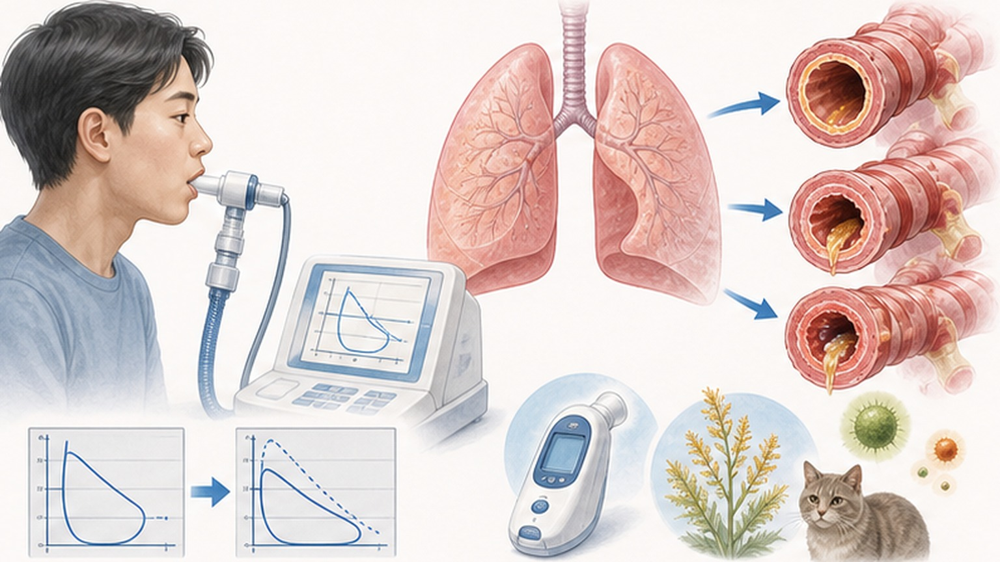
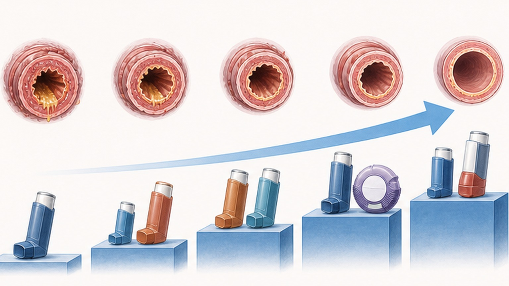
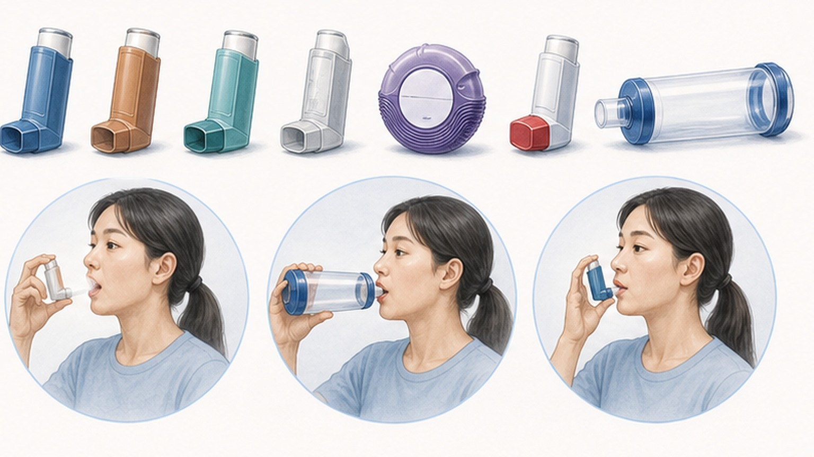
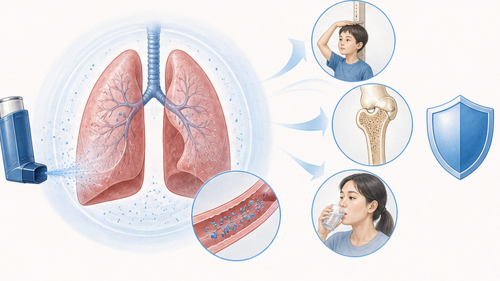

천식 (Asthma),
올바른 이해와 관리로 건강한 호흡
기도 염증을 다스리는 GINA 단계적 치료, 흡입기 사용법, 천식 행동 계획까지
SABA 단독 치료의 시대는 끝났습니다
GINA 2024-2025 — 모든 천식 환자에게 ICS(흡입 스테로이드) 포함 치료가 표준입니다
천식 (Asthma) 이란
기도의 만성 염증 질환 (Chronic Airway Inflammatory Disease)
기도에 만성적인 '불(염증)'이 있고, 이 불이 기도를 예민하게 만들어서 약간의 자극에도 기도가 좁아지는 병입니다.
비만세포·호산구·T림프구 같은 면역세포가 기도 점막에서 만성 염증을 일으키면, 기도가 과민(hyper-reactive)해져 찬 공기·알레르겐·운동·바이러스 등 약한 자극에도 과도하게 반응합니다. 그 결과 기관지 수축 + 점막 부종 + 점액 과분비가 동시에 일어나 기류 제한 — 천명·기침·호흡곤란이 발생합니다. 염증을 오래 방치하면 기도 리모델링(비가역적 변화)이 진행되므로, 조기 항염증 치료가 핵심입니다.
천식의 진단 — 4가지 객관적 검사
증상만으로는 진단할 수 없습니다. 객관적 검사로 가역적 기류 제한을 확인합니다

천식 조절 평가 (Asthma Control Test, ACT)
최근 4주간 5개 항목 5~25점 — 점수에 따라 치료 방향을 결정합니다
단계적 치료 — Track 1 (GINA 선호)
모든 단계에서 ICS-formoterol을 완화제로 사용 — MART 요법(유지 + 완화)
- 유지없음 (필요 시만)
- 완화저용량 ICS-formoterol PRN
- 유지저용량 ICS-formoterol
- 완화같은 흡입기 추가 흡입
- 유지중용량 ICS-formoterol
- 완화저용량 ICS-formoterol PRN
- 유지고용량 ICS-formoterol + LAMA
- 생물학적omalizumab · dupilumab · benralizumab

국내 가용 ICS-LABA 복합 흡입제
국내에서 가장 많이 처방되는 4가지 흡입제 — 디바이스와 특징이 다릅니다
- 성분Budesonide / Formoterol
- 디바이스터부헬러 DPI · 80/4.5·160/4.5·320/9
- 특징MART 가능 (유지 + 완화)
- 성분Fluticasone / Salmeterol
- 디바이스디스커스 DPI · 100/50·250/50·500/50
- 특징용량 카운터 내장 · MART 불가
- 성분Fluticasone furoate / Vilanterol
- 디바이스엘립타 DPI · 100/25 · 200/25
- 특징1일 1회 · 오류율 최저
- 성분Beclometasone / Formoterol
- 디바이스pMDI / NEXThaler · 100/6 · 200/6
- 특징초미립자 · 높은 폐침착률

올바른 흡입기 사용법 — MDI vs DPI
디바이스에 따라 흡입 속도가 정반대입니다 — 매 방문 시 환자에게 시연을 요청하세요
- 스페이서 연결 후 사용 (폐 전달률 10–20% → 40% 이상)
- 캔을 5~10초간 흔들고 마우스피스에 입술 밀착
- 캔 1회 누름과 동시에 5초에 걸쳐 천천히 깊게 흡입
- 흡입 후 10초간 숨 참기 — 약물 침착 시간
- 스페이서 휘슬이 울리면 흡입 속도가 너무 빠른 신호
- 스테로이드 흡입 후 반드시 입 헹구고 뱉기
- 기기별 방법으로 용량 장전 후 사용
- 흡입 전 기기에서 고개 돌려 숨을 완전히 내쉼
- 빠르고 세게 한 번에 흡입 (≥30~60 L/min)
- DPI 안으로 절대 숨을 내쉬지 말 것 (습기로 약물 손상)
- 천천히 흡입 금지 · 캡슐(브리즈헬러)은 흡입용
- 욕실 등 습한 곳 보관 금지 · 흡입 후 입 헹구기
"흡입 스테로이드, 오래 써도 괜찮나요?"
흡입 스테로이드(ICS)는 경구 스테로이드와 완전히 다릅니다 — 임신 중에도 반드시 계속 사용
증상이 없는 것은 약이 기도 염증을 잘 조절하고 있다는 의미입니다. ICS를 중단하면 기도 염증이 다시 악화되어 급성 악화 위험이 증가합니다.
ICS는 약물이 폐에 직접 전달되어 전신 흡수가 최소화됩니다. 저~중용량(≤400mcg budesonide)에서는 전신 부작용이 거의 없으며, 고용량(>1,500mcg/일)에서만 골밀도 감소·피부 얇아짐·백내장 등이 가능합니다. 소아의 성장 속도가 약 0.48cm/년 감소할 수 있으나 최종 키 영향은 약 1cm 이하로 미미합니다. 임신 중에도 budesonide는 6,600명 이상의 안전성 자료에서 기형·사산 증가가 없었으며, 비조절 천식이 약물보다 훨씬 위험합니다 — 임산부의 23~36%가 자의 중단하지만 절대 금물입니다. 운동유발 기관지수축은 천식의 70~90%에서 발생하므로, 운동 15분 전 SABA 흡입과 10~15분 준비운동으로 관리합니다.

중증 천식 발작 — 즉시 119에 연락하세요
아래 신호는 status asthmaticus 가능성 — 응급 약물 사용 후 15~20분 내 미호전이면 즉시 응급실
오늘 꼭 기억할 핵심 8가지
유발인자 회피, 천식 행동 계획, 정기 추적 — 실천이 곧 조절입니다
꾸준한 관리가
건강한 호흡을 만듭니다
천식은 완치는 어렵지만, 올바른 치료와 관리로 관해(remission)가 가능합니다 — 언제든 진료실에서 상담해 주세요
광교중앙로 298, 4층
토요일 08:30~13:30
같은 자료를 다시 볼 수 있어요